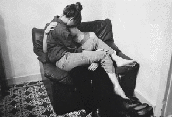

Episode 1
December 2,2026
It was a fine morning stepping out from my bed i noticed that shyla woke up early before me. As usual the same as every weekend but something really seems not to be alright.
I can feel it in my blood but there's nothing to worry about that's what i keep saying it to myself. Having finished my daily routine began to think what my life would be if my shyla was not with me.
Even the thought of her not being with me makes me leave in a state of utter loneliness. Then a sudden shutter sound from the door and here she comes the love of my life. Spanning towards me with a hug. But deep inside me feels something's not alright. Then she goes to the kitchen to fulfill her thirty.
Then all of a sudden she she collapses. I thrived towards her and then she says "Darling you are the best thing that have ever happened to me, and i always loved you and admired you the most.
But everything comes to an end at some point of time,well i guess here's my time now darling."
Taking a deep breadth viciously and says -"I discovered that i have Leukemia and i have got only a few more minutes left with me."
Not knowing what leukemia is and don't know what to do i said -"Baby what are you talking about, why you got only a few more minutes left." She held her hand around my neck saying - "Darling i am gonna die in a few more minutes and there's something that i need to convey you".
I fell almost lost and began to cry in agony from heart and i hugged her whispering in her ears -"Baby no you cant do this to me and stop saying that". "All you need to know is on my laptop and after i depart from you please follow what i have been secretly developing since the past few days." "Just follow as it is."
Then she gave me a deep kiss as if it was her last. And a mesmerizing look at me as if she is not gonna be with anymore. I was crying sorrowfully as if it was my last day with someone who was i really cared about.
Everything stated to fall apart within me.
Then came a silent tune from her lips -"Darling what type of wife am i to you" .
Out of emotions i said her -"You are a bad wife to me, you are saying you are gonna a leave me i really shouldn't have never fallen in love with you.You are the most unbelievable woman i shouldn't have ever met".
She gave a vivid smile saying "Darling just say me what type of wife am i to you." I vowed saying her -"You are an other mom to me darling".
Then she left with her unfailing faith.
Shyla thought me everything about love,life and long journey ahead. Maybe she might not be with me but she is always with me.
Our love is like the wind well we can't see it but we can always feel it.
"Thankyou1"
April 2,2027
Its been about 5 months for now shyla leaving me in the state of utter darkness. Couldn’t concentrate on anything but always have her last few words of her rolling in and out of my mind each and everytime i inhale.
Always she was my best girl that i ever imagined to have as my life partner.I questioned myself why am i still alive even after my dearest wife’s death.Thinking in and out for a few hours with a bottle of whisky in my hand and came to a final decision to get the hell out of this forsaken earth
Being intoxicated above the limit and driving to a hill top mountain. The hill being inclined enough so that my car wasn’t any spider man to climb it. I got out and started to climb till the top.
“Maybe every love story ends this way” said to myself looking at the cloudy sky. I remember this place of me and my wife sitting here all alone staring at the stars with naked eyes and holding each other out so that no ones gonna be afraid of the sound of the wolves and the utter darkness.
“My pain is gonna come to an end, after all this happens no ones get hurts or have any emotions left behind”- i cried out in agony standing at the top of the peak of the mountain edge. Shyla slapped me once when i told her that i will be taking a selfie standing at the edge.
That was the first time she slapped me and cried spontaneously for hurting me.”Can you even imagine what might happen to me if something terrible happens to.”
“Can you!!!! Haaaaaa”- she shouted at me holding me with all the strength in her so that i wouldn’t do something stupid.
But for now there’s nothing holding me back inappropriately right now. I guess god likes to see this kind of stuff happen so that he can have a good vociferous view of the scenario from above. The clouds started to cry just like me. Staring at the view i began to feel what might possibly my life with my dearest darling if she was still with me.
Suddenly some of the stuff of me and shyla was seen just below the edge of the mountain. Since this being my last day my conscience hunched me to take a quick look at it. Got down from the death spot where shyla never wanted to go.
Taking a look at the stuff i picked it up and it was shyla’s half torn picture. The rain was so heavy and it relentlessly took it away from my hand. I threw the bottle and began following the heavy cold breeze. The picture flew till the back of the mountain and got struck on one of the branches.
I tried to look around me to have the picture back again. But something struck my eye which wasn’t suppose to be in this kind of place. Taking a closer look again I walked through. And this happened.
Began to think was it my wife who has been secretly doing this stuff without me noticing her. The cave had all the pictures of me and shyla being together and childhood pictures of me and her. It was as if i was again back to shyla.
I shouted -“Shyla please come back baby you can’t do this to me please! ah ah” cried out like a child standing on my knees.
The cave was like a canvas of me and shyla during those moments which are worthy enough to remember again.
I touched each and every picture of her. There was this message which was glowing in the dark saying-“I knew you would definitely come her after my death , and i am really sorry darling since i can’t be with you.”
“Maybe i might not be the perfect wife for you as you dreamed of being with forever”. “But you are the one who i always admired as a perfect husband to be with, and as for now no wife would like to see her beloved husband depart in front of her.”
“Darling I know sometimes things may not always make sense to you right now. But remember what your wife always tells you? Straighten up little soldier
Stiffen up that upper lip
What you crying about?
You got me “.
She has been planning this a long time ago. The only person i hate her the most is my wife. She kept a lot of secrets from me.
The message continues -“Darling always remember that everything happens for a reason maybe you and me not being together is for a big cause”
“Take care darling I love you more than anything in this world. If you feel lonely think about the happy moments we spent together and drive away the sadness in you”
“Bye darling i know its hard for you to say goodbye’s”.
At the end the message was signed by my wife saying -“Yours Shyla”.
My phone started to vibrate vigorously when i make a glance at it displays a message automatically alerting -“Follow the instructions as mentioned in this Mobile Application”.
Then i started to realize that my wife has insisted me to look at her application that was stored in her computer.
Outrunning the strong breeze of rain and cold winds that flew over my face as if they were saying me to slow down a bit.
Ignoring the present world i was running like a maniac to reach my home as fast as possible.
Smashing the door open quickly pressing the power button of her computer an application ran on startup and it says -“If you are reading this then i am either dead or i have been caught hardheadedly i hope the second one is not true”.
Then the application takes me to a video of her————————————————————————————————————————.
————–to be continued
Written by Dheshoju Kalyan Kumar.
“Excuse me sir you gotta wake up and hold back now”
“We have to take some of blood samples, so please hold your fist slightly” – the nurse requested me.
The nurse woke me up civilly the way they were trained to.I can notice that shyla was not next to me.I couldn’t see her anywhere as i dragged back up the pillow for the blood samples the nurse asked for.
“Nurse do you know where she is, i mean the one who joined me in here” – i asked in a fainting voice.
“You mean the one whom i woke up before getting to you?” – the nurse said.
“Yeah!Yeah! she is the one” – i said.”Well the doctor cajoled her to go home and come back later, since she was here all night looking after you” – the nurse said.
“Ouch!it hurts” – i said in agony while the nurse was doing her blood sample business.”It’s obvious that it hurts.Ok in case of anything you need just press the button to your left” -the nurse adjoined.
“Can i discharge today.I seem to be alright” -i questioned.”Well you health condition seem to be normal then yesterday’s,but the final decision is to be taken by our doctor” – the nurse said.
Always hated these hospitals, well who in this world likes to be bedridden.Do you?
The morning sun seems to be up already,i never woke up this late until now.I held my back on the pillow with the bed in a oblique way.All i could think of is shyla of her overwhelming affection that she is showering on me.I never received such kind of affection.Well that might be the reason that i am cold blooded.
………………………
“How you feeling boy?” – the doctor asks in a refreshing way.”Feeling almost okay enough to get out of here” – i said.
“Not so fast boy, you gotta slow down in life.Life is not gonna be fare, you gotta have a lot of patience” – the doctor verbalizes a cliche.”Thanks but let’s be concise, when i am gonna go out?” – i asked out since i can’t hold back in this hostile place anymore.
“Maybe in two days or so, i hope or even a week if you act in a obscure way to get out” – the doctor was way too straightforward to me.”Well i choose the first one i guess”- i said.
“That’s better” – the doctor said in a benignant way.He is complicating me to stick my ass here till he says so.
“Doctor do you know when she is gonna come back”- i moaned as i can feel the pain in my forehead.”Easy boy!Easy! she said she would be back in an hour or two.And she fastidiously requested me to take look after you in her absence” – the doctor said.
“Oh!”
“Hey let me ask you something are you both together or you both a happy couples” – the doctor asked me with a grinning look at me.
“She is just my friend doctor”
“But i can’t see the friendship thing in you guys boy.A friend would never cuddle up next to him/her and whisper those three little magical words”
“What are you talking about”
“Boy i know that you heard everything that happened the other day.Don’t you knowledge the fact that i am a doctor”
“But how do you know that she proposed me”
“Those three little magical words always have the same lip movement with the same expression’s on the face, irrelevant of the situation”
“You seems to have a lot of experience in this thing”
“Yeah but never got an intense affection from my wife before our marriage, but i regret that i never had such a girl like your’s.She stayed up all night looking after you, i never even saw something like that even in movies boy” – the doctor said.I interrupted him.
“Are you kidding me? I am not in love with her”
“Well boy mark my words you would never get such a girl in your life. Or let me say it the other way around you could never even imagine such a kind of girl even in your wildest dreams” – the doctor tried to acknowledged me.
“Ohh! Thanks for the free advice” – i said in a malignant way.
What’s wrong with this old man. Why is he trying to malign me. Such a doushan
Almost 12:30 pm and i was starving.I pressed the button to my left and the nurse arrived.Asked her to get me some vegan food.She got it to me quickly and she placed it to my side table.
“Is there anything you want?” – the nurse questioned me.Is it okay if i ask her to spoon feed me, it would be so mean to request her to spoon feed me like a toddle
“No thankyou” – i replied.
Tried to grab the spoon with the collaboration of my little finger and my thumb finger.But the effort was abortive.The spoon slipped through my little finger and fell down.I tried to get my finger’s figuring out to grab the spoon as i can’t literally see where it has fallen.
Suddenly i can feel the touch of her again on my hands.
“What are you trying to grab so hard” – she asked with the cute face that she makes.
“Huh! the spoon just slipped which was supposed to aid me have some food”- i said.
“Well don’t try so hard because i am here to help you by feeding you with my finger’s” – she said.
I can see her sober deep inside her eyes.Maybe she is really in love with me, i guess that’s what lover’s do when they see their beloved one’s in facing trouble.Maybe i should just remain ambivalent about the situation that happened last night.I hope that she doesn’t know her secret proposal being heard by me subconsciously.
She fed me the food with her soft fingers.My mom used to feed me like this when i was little.Now she does it.
“How are you feeling right now?” – she moaned.
She is feeling my pain, i can see the tears rupturing through her eyes.But she is holding them back.Why is she so sad.
“I am fine now, the doctor says that i can discharge in two or three days” – i said.”Look i didn’t want to call your parents because i didn’t want to concern them.” – she said.
“That’s alright, I cannot see any liability here since i got a good friend like you looking after me” – i said with a delightful expression on my face.
“We are more than just friends” – she said.
This thing between us is getting way too far. I gotta stop her or else she might start making plans already
“Cool, so what just happened in that crocked house. How did you get me out from that horrifying abstract thing?” – i asked her.
“I could tell you, but for that i have to kill you” – she said smirking her face out.She looks at me in a very different way, that i never imagined to.
“So you are not gonna tell me?” – i asked her.
“Just wait for the appropriate time to ask me” – she backfired me with a face.
After the meal she moped my lips. She got so closer towards me as if she deserves a kiss for what she did. I decided to remain aloof for what she’s trying to do. She made a direct eye contact with mine which are conducing me to kiss her. But you know i am not that type of guy bluh bluh……
She didn’t want to make a move after condoning herself with the hint she gave me through the eyes. But guess what she did make a move.
She put the tissue away and held one of her hands on mine and the other on my check and she landed her lips on mine. I was stoned not knowing what to do after all the things that she did for me. She kissed for more than three minutes.
Her kiss just kept getting stronger and stronger, and she was trying to bridge the gap between our bodies. I held my other hand on her backside. She was almost so close to me that we were almost just one step further to getting laid. She flipped her lips more than two to experience the different angles from me. Then she kissed my smooched my neck and again got back her lips on mine. This time she was so violent, she was trying to have a deep kiss(french kiss) with me.
She did actually, just for a few seconds though until someone came by.
“Arghh Arghhh!” – a alarming sound.
Shit it’s the doctor, he caught us dichotomously.
Shyla piled out of me and quickly walked out of the room.Now the doctor sees me in a maleficent way
“I heard from both of you that you were just friends, but what i see now doesn’t characterize you as so” – the doctor said with a proud look on his face.“I don’t know all of a sudden she suddenly kissed me and i was stoned”- i said.“But you didn’t abnegate her after that right?” – the doctor said.
“I don’t know what to say”- i said with confusing thoughts strolling around my head.
“You don’t have to say anything, just go with her flow. Someday you would acknowledge my words” – the doctor said. His words made my thoughts still worse of not knowing what to do about her.